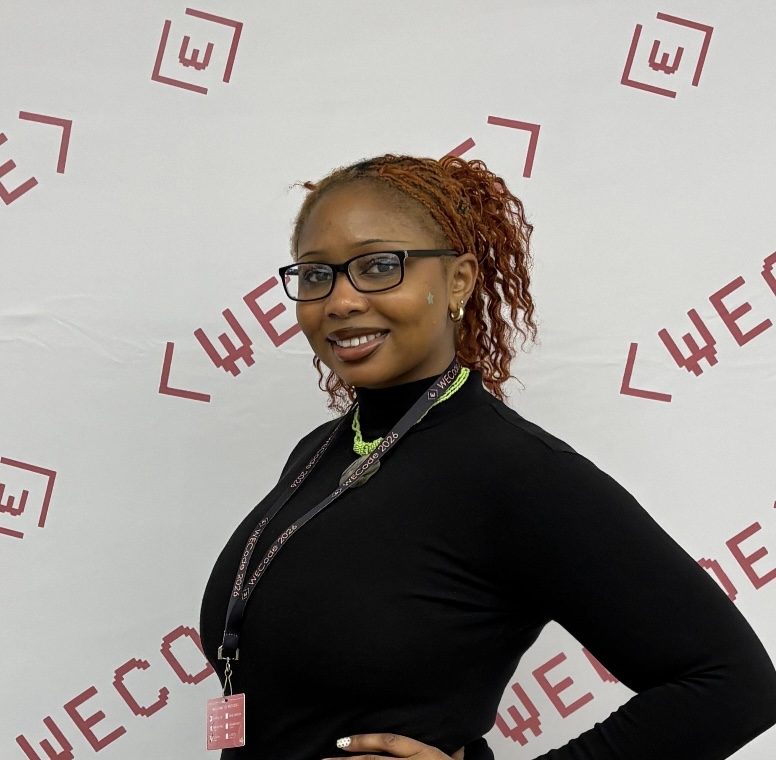

I am a Computer Science major & Education minor student at The College of Wooster with a focus on front-end development and creative technology. I’m interested in building tools that feel intuitive, visually engaging, and actually useful to people. My work sits at the intersection of design and engineering. I’ve taught coding and digital media to students, supported technical systems, and worked on projects involving image generation and diffusion models. Through that, I’ve developed a strong interest in how users interact with complex systems, and how to make those systems more transparent and controllable. I’m currently exploring ways to combine structured inputs with generative models, with a focus on improving user control and interpretability.
Improving controllability in image synthesis using structural conditioning (sketches) and Stable Cascade.
Algorithmic analysis of genomic data sequences for healthcare applications.
Responsive digital wireframes utilizing organic shapes and soft botanical palettes.
Implementation of real-time object detection models and computer vision workflows.
An intelligent habit-stacking app that uses AI to personalize your wellness journey while keeping you connected to your circle.
"nature is the best designer."
I’ve worked with middle and high school students teaching coding, digital media, and technical skills. Beyond just instruction, I focused on helping students build confidence in problem-solving and navigating unfamiliar tools.
Accessibility: Made technical concepts less intimidating for students who had never touched a line of code.
Growth: Helped students transition from zero experience to building their own independent projects.
Environment: Created a space where students felt comfortable making mistakes and asking questions.
"One of the most rewarding parts of teaching was watching students go from being stuck on simple errors to independently debugging their own projects. That shift from frustration to confidence was often more important to me than the final result."
Awarded by the Computer Science department for original research in structural conditioning for image synthesis.
Selected to attend the world’s largest student-led Women in Tech conference at Harvard University.
Presented independent research at the National Conference on Undergraduate Research (2026).